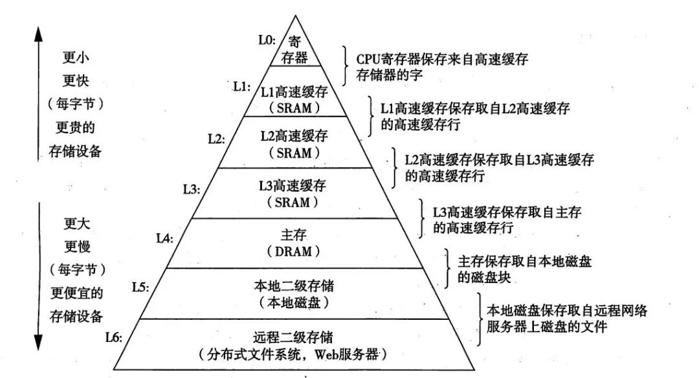

摘要：计算机基础之操作系统，包括进 程通信、调度，死锁，内存管理，内存寻址，虚拟内存等。
操作系统
操作系统：是管理计算机硬件与软件资源的程序，向上对用户程序提供接口，向下负责管理硬件资源，如处理器管理、存储器管理、设备管理、文件管理等。
用户态 VS 内核态
- 用户态：用户程序执行时CPU所处的状态，只能访问用户地址空间。
- 内核态（kernel mode）：操作系统管理程序执行时CPU所处的状态，能执行（包含特权指令在内的）一切指令，访问系统内所有的存储空间。
用户程序运行在用户态，操作系统内核运行在内核态。
CPU从用户态切换到内核态的方法有三种：
- 系统调用：操作系统提供的用户接口，是一种软中断。
- 异常/内中断：由错误引起的，如文件损坏、缺页故障等。
- 外部中断：处理器外设的状态变化，是硬中断。
进程管理
进程的控制结构：
- 进程控制块 PCB：是进程存在的唯一标识
- 进程标识符（PID）
- 进程当前状态
- 进程优先级
- 资源分配清单
- 程序和数据地址
- CPU 现场保护区（用于进程切换）等
- 程序段
- 数据段
进程状态
- 创建（new)）
- 就绪（ready)）：进程获得了除CPU外的一切所需资源，一旦得到CPU分配的时间片即可运行。
- 运行（running） ：进程正在CPU上运行（单核 CPU 任意时刻只有一个进程处于运行状态）。
- 阻塞/等待（waiting)）：进程正在等待某一事件而暂停运行，如等待某资源可用或 IO 操作完成。即使处理器空闲，该进程也不能运行。
- 结束（terminated)）：进程正常结束或其他原因中断退出运行。
进程间的通信方式
独立进程：不与任何其他进程共享数据的进程；
协作进程：与其他进程共享数据的进程。
每个进程各自有不同的用户地址空间，任一进程的全局变量在另一进程中都看不到，协作进程间交换数据必须通过内核。
进程间通信（IPC）：在内核中开辟一块缓冲区，进程A把数据从用户空间拷到内核缓冲区，进程B再（从内核缓冲区）把数据读走。
- 管道
- 管道/匿名管道（Pipes）：用于有亲缘关系的父子或兄弟进程间的通信；数据只能单向流动，存在于内存中的文件。
- 有名管道（Names Pipes） : 用于任意两个进程通信。严格遵循先进先出，以磁盘文件的方式存在。
- 系统 IPC：
- 消息队列（Message Queuing、消息传递系统）：是消息的链表，存放在内存/内核中。通过在协作进程间交换消息来实现通信。
- 共享内存：协作进程通过向共享内存区域读出或写入数据来实现通信。
多个进程访问同一块内存空间，可及时看到其它进程对共享内存中数据的更新。需依靠同步操作，如互斥锁和信号量等，最快最有用。
- 信号量（Semaphores）：是一个计数器，用于多进程对共享数据的访问，解决进程同步相关的问题并避免竞争条件。
- 信号（Signal） ：用于通知接收进程某个事件已发生。
- 套接字（Sockets)）: 用于在客户端和服务器间的网络通信，是支持 TCP/IP 的网络通信的基本操作单元。
进程调度
为了确定进程执行顺序以实现最大 CPU 利用率。
进程调度的时机：
- （在使用抢占式优先级调度的系统中，）有更高优先级的进程就绪时；
- 分时系统中，分给当前进程的时间片用完；
- 当前运行的进程由于某种原因阻塞；
- 执行完系统调用等系统程序后返回用户进程；
- 当前运行的进程运行结束；
不能进行进程调度的情况：
- 在中断处理程序执行时；
- 在操作系统的内核程序临界区内；
- 其它需完全屏蔽中断的原子操作过程中。
进程调度算法/策略：
- 先到先服务（FCFS）：从就绪队列中选择最先进入的进程，分配资源立即执行直到完成，或发生某事件而被阻塞放弃占用 CPU。
- 短作业优先（SJF）：从就绪队列中选出估计运行时间最短的进程，忽略了长进程。
- 时间片轮转/R（(Round Robin）：每个进程被分配一个时间片，即该进程允许运行的时间，时间片结束后将该任务放回任务队列。
- （抢占式）优先级调度：根据内存、时间或其他资源要求确定优先级，相同优先级的以 FCFS 方式执行。
- 高响应比优先。
- 多级队列。
- 多级反馈队列：也按时间片轮转算法执行任务，设置n个队列，当第一个队列任务为空，才执行第二个队列，依次类推。既能使高优先级的进程得到响应，又能使短进程迅速完成。
进程调度策略的基本设计指标：
- CPU 利用率；
- 系统吞吐率，即单位时间内CPU完成的作业的数量；
- 响应时间；
- 周转时间：指作业从提交到完成的时间间隔；
- 平均周转时间；
- 带权周转时间；
- 平均带权周转时间；
死锁
死锁：指多个进程/线程因争夺有限的资源或彼此通信而造成互相等待（阻塞），若无外力作用，都将无法推进下去。
活锁：任务或执行者没有被阻塞，由于某些条件没有满足，导致一直重复尝试、失败。
解决死锁的方法分为：死锁的预防，避免，检测/定位、恢复。
产生死锁的必要条件
以下四个条件同时成立，死锁才会出现：
- 互斥：一个资源某一时刻（每次）只能被一个线程占用，直到被释放；
- 请求与保持：一个线程因请求资源而阻塞时，对已获得的资源保持不放；
- 不剥夺：线程已获得的资源，在末用完前不能被其他线程强行剥夺；
- 循环等待：多个线程间形成头尾相接的循环（环路）等待资源。
预防和避免死锁
预防死锁：破坏四个必要条件中的任一个：
破坏互斥条件：允许多个进程同时访问某些资源；缺点：
- 有的资源不允许被同时访问，如打印机等临界资源需互斥访问，不现实；
- 破坏请求与保持条件：一次性申请所有的资源，资源不够则不分配；缺点：
- 线程在执行前不可能知道所需的全部资源；
- 资源利用率低；
- 降低并发；
- 破坏不剥夺条件：占用部分资源的线程申请不到其他需要的资源时，可主动释放占有的资源；缺点：
- 破坏循环等待条件：按某一顺序申请资源，反序释放；缺点：
避免死锁：在资源分配时，借助于算法（如银行家算法）对资源分配进行计算评估，使其进入安全状态。
尽量减少同步代码块。
死锁检测/定位/排查和恢复
死锁检测/定位：
- 用 jps 或系统的 ps 命令、任务管理器等工具，确定进程 ID；
- 调用 jstack 工具获取线程栈：jstack pid，定位相互间的依赖关系，进而找到死锁；
- studio 打印日志；
- JConsole 可在图形界面进行有限的死锁检测。
恢复：
- 逐个撤消陷于死锁的进程，直到死锁消失；
- 从陷于死锁的进程中逐个强迫放弃所占用的资源，直至死锁消失；
- 从其它进程强行剥夺足够资源分配给死锁进程；
AB-BA 死锁问题
- 线程1去拿
synchronized锁A；
- 线程2拿
synchronized锁B；
- 线程1拿锁B，线程2拿锁A，两个线程相互等待形成死锁。
public class Main {
public static void main(String[] args) {
new Thread(()->{ //
A.a();
}).start();
new Thread(()->{
B.b();
}).start();
}
// 静态内部类
static class A {
public static synchronized void a() {
try {
Thread.sleep(3000);
} catch (Exception e) {
e.printStackTrace();
}
System.out.println("get A.");
B.b();
}
}
// B 类相似
}
内存管理与调度
内存管理：负责内存的分配与回收、地址转换（将逻辑地址转换为相应的物理地址）、内存寻址等。
CPU 中的高速缓存大都是为了解决 CPU 处理速度和内存处理速度不对等的问题。

常见的内存管理机制
连续分配管理方式：为一个用户程序分配一个连续的内存空间，如块式管理（有碎片）。
非连续分配管理方式：允许一个程序使用的内存分布在离散/不相邻的内存中，如页式管理和段式管理、段页式管理机制。
- 页是物理单位，段是逻辑单位。分别通过页表和段表对应逻辑地址和物理地址。？
逻辑、虚拟/线性、物理地址
内存寻址


页面置换算法
缺页中断：地址映射过程中，若在页面中发现要访问的页面不在内存中，需要 OS 将其调入主存后再访问。
页面置换算法：当发生缺页中断时，如果当前内存中并没有空闲页面，OS 必须在内存选择一个页面将其移出内存，以便为即将调入的页面让出空间。淘汰页面的规则。
- OPT/最佳页面置换算法：选择最长时间内不再被访问的页面，无法实现。
- FIFO 算法：淘汰最先进入内存、内存中驻留时间最久的页面。
- LRU（Least Recently Used 最近最久未使用算法）：记录页面自上次访问以来所经历的时间 T，选择 T 值最大的。
- LFU （Least Frequently Used 最少使用算法）
手写 LRU/LFU 调度算法
见手撕算法
虚拟内存
虚拟内存：使应用程序认为它拥有连续的可用内存（连续完整的地址空间），而实际上，通常被分隔成多个物理内存碎片，还有部分暂存在外部磁盘存储器上，在需要时进行数据交换。
局部性原理
表现在以下两个方面：
- 时间局部性 ：执行的指令和访问的数据、不久后可能再次被执行和访问。
- 空间局部性 ：一旦程序访问了某个存储单元，不久后附近的存储单元也将被访问。
虚拟存储器
- 操作系统将内存中暂时不用的内容换到外存上；
- 当访问的信息不在内存时，再调入内存，这样存储器好像比实际内存大了。